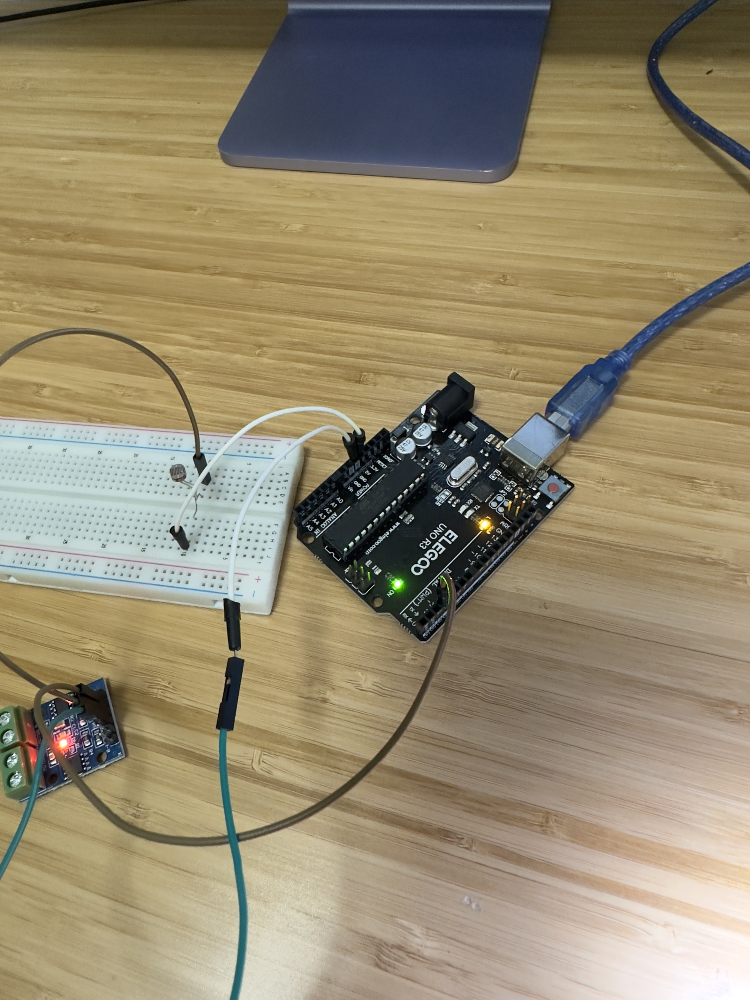

<div class="textcontainer">
<p class="margin"> </p>
<h3>Week 4: Microcontroller Programming</h3>
<p class="margin"> </p>
<h4>Assignment: Make an Arduino Do Something</h4>
For this week, we were tasked with making our Arduino do someething. I orignally wanted to use a light sensor to control a motor with Arduino. I was unable to get this to work so I shifted gears and used a button to contorl the start and stop of a motor. Lets first start by talking about my orginal task and what I did and where I think I might have went wrong. For the wiring I used the wiring diagram that we learned in class (https://nathanmelenbrink.github.io/lab/arduino/L9110.html) and used a breadboard to seperate the current (ground on one side and power on the other) by the photo resistor. I was only focused on using one motor so I chose pin 3 to connect directly to motor A1-A on the the L9110. Once I uploaded the code the motor would run regardless of the amount of light that was present. The step where I think I went wrong was not configuring the code to provide a feedback value to the arduino. I think this would have allowed the ardunio to know the amount of light and then run the loop. My thought process was that the photo resistor would provide enough resistance that without light the resistance would be enough to stop the motor from spinning.
<p class="margin"> </p>
<div class="flexrow">

</div>
<p class="caption">Here is a picture of the failed attempt.</p>
When this failed I didnt think about the code and was thinking about the photoresister not stopping enough current. This lead me to use a button because I knew the current flow would be 0 if the button was not pushed. I replaced the photo resistor with a button.
<p class="margin"> </p>
<div class="flexrow">
</div>
<p class="caption">Button in bread board.</p>
<p class="margin"> </p>
<div class="flexrow">
</div>
<p class="caption">Here is the schematic.</p>
<p class="margin"> </p>
Sadly after this change I still had an issue. Here is the code I started with. I started with the code we learned in class (https://nathanmelenbrink.github.io/lab/arduino/L9110.html). The original code included a delay which made it impossible to know when the button would cause the motor to work.
<p class="margin"> </p>
<p class="margin"> </p>
<div class="flexrow">
</div>
<p class="caption">Here is a screenshot of the origninal code being uploaded in Arduino.</p>
<p class="margin"> </p>
I modified the code since I was only using 1 motor (A) and did not need a delay becaause the botton would controll the motor. I kept the A motor in the Low position and deleted the B motor and delay.
<pre><code style="background-color: #2d2b33;">
const int A1A = 3; // define pin 3 for A-1A
void setup() {
pinMode(A1A, OUTPUT); // specify these pins as outputs
digitalWrite(A1A, LOW); // start with the motors off
}
void loop() {
// start the motor
digitalWrite(A1A, LOW);
}
</code></pre>
<p class="margin"> </p>
<div class="flexrow">
<video controls>
<source src="./Button.mov" type="video/mp4" width="25%">
</video>
</div>
<p class="caption">Button controlling motor.</p>
</div>